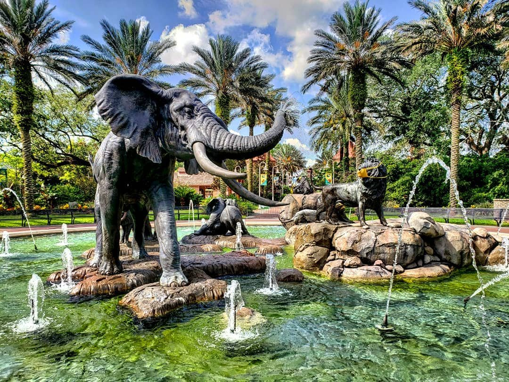
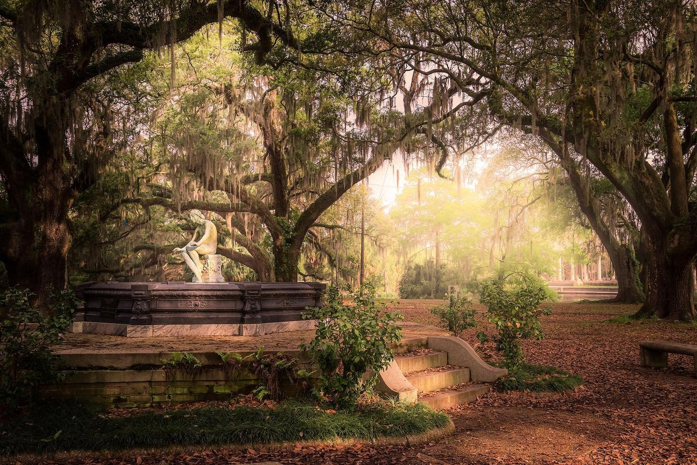
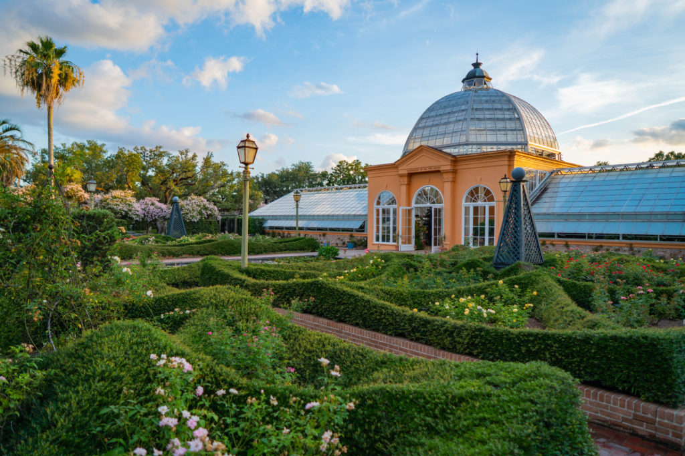
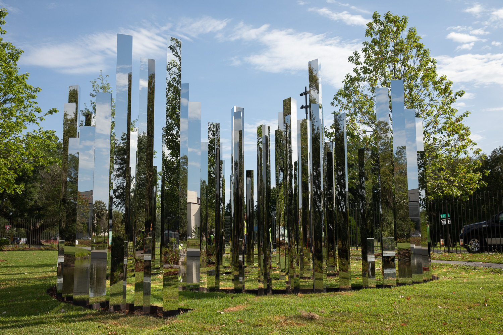
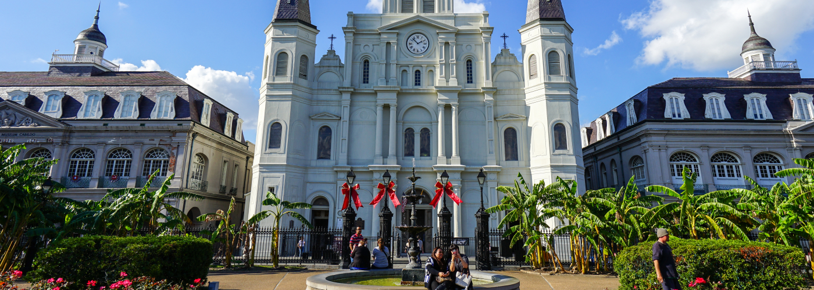
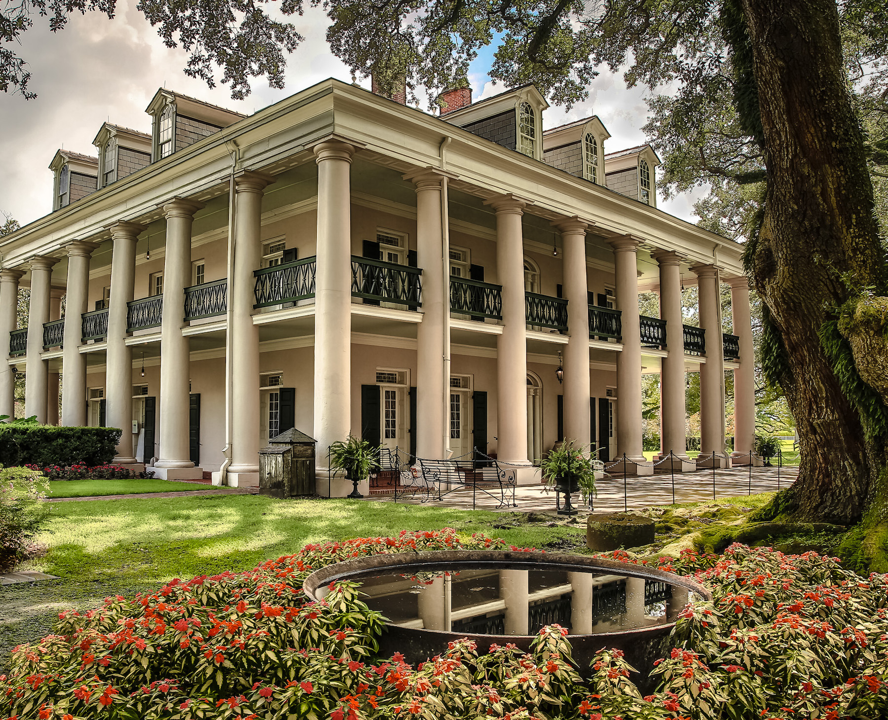

Audubon Zoo
The Audubon Zoo is part of the Audubon Nature Institute, alongside Audubon Aquarium of the Americas. It is a wonderful natural park, covering no less than 58 acres of land, and is the home to more than 2,000 animals, including sea lions, jaguars, black bears, wolves... It was named in honor to John James Audubon, an artist and naturalist who lived in New Orleans starting from 1821. This is a really fun place to visit, and it is child-friendly, so if you have kids, don't hesitate to bring them along !
$17-$25 per person, depending on the age
New Orleans City Park
New Orleans' City Park is surely one of the central points of the city. This huge park, 50% larger than Central Park, covers a surface of 1,300 acres, and hosts the world's largest collection of live oak trees, some of them even older than 600 years of age. It is a really beautiful and well maintained park, and it contains multiple attractions and recreation facilities. It's also a really calm and quiet place, perfect for a little walk if you're tired of the effervescence of the city, which can be quite overwhelming at times.
Free
Botanical Garden
The New Orleans Botanical Garden is a botanical garden created in the 1930s in the town's City Park. It covers 12 acres of land, and contains more than 2,000 different plant species, from all around the world. It is separated in different sections, containing certain types of plants, or plants from a specific part of the world. It also contains a popular display : the Train Garden, a 1/22 scale of New Orleans as it was in the early 1800s. The train runs on a 400 meters long track, and the city model is entirely made of plant materials.
Children under 3 : free, children 3-12 : $6, adults : $12
Sydney and Walda Besthoff sculpture garden
The Sydney and Walda Besthoff Sculpture Garden is located in New Orleans' City Park. It is a part of New Orleans' Museum of Art , and covers 7 acres of land, filled with modern art sculptures. Some of them are abstract, like the Mirror Labyrinth or the Wind Sculpture V, others are more realistic, like Civitas or History of the conquest.
Free
St. Louis Cathedral
The Cathedral-Basilica of Saint Louis, King of France is the oldest cathedral of the United States in continuous use. It was built in 1718, and escaped total obliteration multiple times, but was raised to the rank of cathedral in 1793 and was largely rebuilt and completed in the 1850s. Two popes also visited the cathedral : Paul VI in 1964, and John Paul II in 1987.
Free
615 Pere Antoine Alley, New Orleans, LA 70116, United States
Oak Alley Plantation
Oak Alley Plantation is an old plantation near New Orleans. This National Historic site is composed of different exhibits, along with the plantation park and of course the plantation's mansion. This plantation, like many others, was based on the production of sugar from sugarcanes, and used slaves as working force to produce this sugar. That is why it was decided to transform it into a touristic place explaining the conditions of slaves during the 19th and 18th centuries.
Variating, check the website for current prices
Louis Armstrong Park

Often nicknamed as "Satch", "Pops" or "Louie", Louis Armstrong is one of the most famous jazzmen of all times. He's the author of the music What a wonderful world, one of the most known jazz music track in the world. As he was born and grew up in New Orleans, it was the town's duty to commemorate him, and his music. The park was originally named "Congo Square", because it was the place where slaves used to gather the Sunday afternoons to play African music, during the 18th and 19th centuries. Infrastructures were built on it in the 1960s, when it became the Louis Armstrong Park.
Free